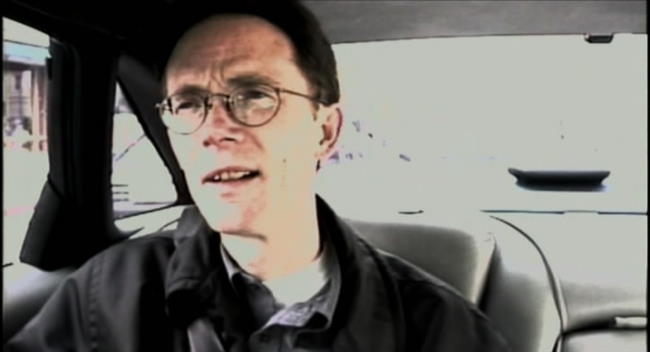
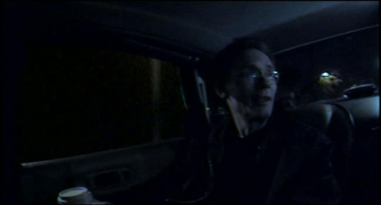
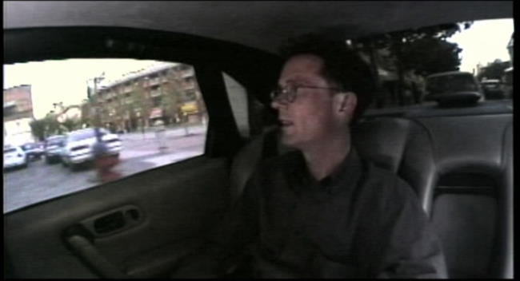
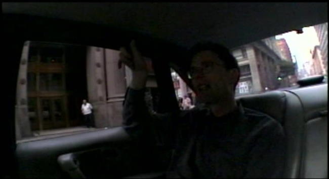
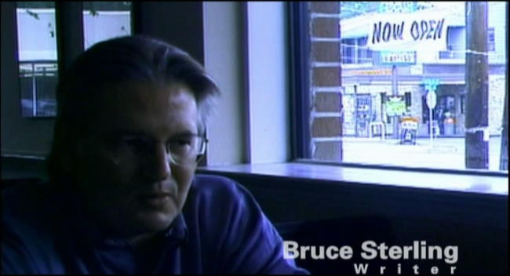
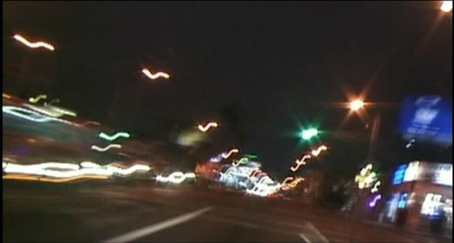

Movie review by : SFAM
Year : 2000
Directed by : Mark Neale
Written by : Mark Neale
Degree of Cyberpunk visuals : Very Low
Correlation to Cyberpunk themes : Low
Rating : 3/10

Overview: I notice the decent IMDB rating for No Maps, but honestly, I just don't see it. I have hard time coming up with something positive to say as No Maps for These Territories as a documentary on Gibson fails in virtually all aspects possible. You have to look long and hard to find a documentary with this little attention to detail across the board. No Maps has horrible lighting, haphazard editing and "FX" choices which detract even more from the mess that's already on screen. In short, this film seems to be sending the message that William Gibson is a meandering scatterbrain who occasionally comes up with an interesting idea or two, but who, for reasons not of his own making, was able to become wildly popular. None of this is true of course, which is why this documentary resonates so badly with me.
Because I also gave New Rose Hotel a horrible rating, I want to be VERY clear about something ? I think William Gibson is one of the most influential writers of the later part of the 20th century. His stuff is better than great. In no way does my knocking these movies reflect at all on my opinion of his literary works or his legacy. Nor do I believe that Gibson's works cannot be very successfully transferred on-screen. Unfortunately, Gibson has yet to find his Peter Jackson.

I'm guessing the cup is a prop to get more light into the picture...
The Setting: A significant part of my dislike for No Maps is based on the decision to use a car as the setting. In thinking about it, it's really hard to imagine a worse way to conduct a documentary. The entire thing takes place with Mark Neale, the director, driving a car while talking to Gibson, who is in the back seat surrounded by a few of set cameras. In using this approach, Neale was able to generate the worst of all scenarios:

Notice that the left window scene doesn't match with the rear window - this was intentional.
What the Cinematography Conveyed: Probably the most dissapointing aspect of No Maps relates to the unintentional visual symbols the "road trip" documentary provided. Gibson is known as a trailblazer ? a thought leader in setting the course for science fiction, yet the interview in the back of the car makes him seem like someone happy to follow along someone else's path. The title, "No Maps for These Territories " is supposed to convey that Gibson went into un-chartered waters, yet everything in this documentary, from the meandering and repetitive music to the monotonous car ride, makes Gibson come across as someone who basically just intellectually wanders around and hopes he happens upon something interesting. In short ? there was a map of the territory ? it was in Gibson's mind. This film works hard to obfuscates that fact:

No, I didn't have to look hard to find quality lighting shots like this one.
Perhaps the goal was either to break up the monotony of staring at Gibson in a back seat of a car for 88 minutes, or maybe it was done with the hope of making Gibson's oratory seem non-linear, but what seems to be conveyed is that Gibson's ideas aren't really connected in any real way. In line with this, Gibson as the "meanderer" is re-enforced by poor editing decisions. While a few segments such as the internet one seem to have a nice flow, most segments are all over the non-existent map. What Neale unintentionally seems to convey is that if you keep a camera on Gibson long enough, like the rest of us, he'll eventually come up with a a number of half-formed, off-the-cuff comments that go absolutely nowhere.

Was this shot intentional? Does Mr. Sterling own a gas station and like Marlboros? If so, probably they should have worked the camera better, as often only half of the gas station is showing.
Neuromancer's Legacy: One thing we do learn from No Maps is that Gibson, like many great innovators, is probably the worst person to talk about his place in history, and in particular, the relevance of his earlier works like Neuromancer. When it comes to discussing his legacy, Gibson is extremely modest. He's also a perfectionist when it comes to evaluating his prose. As he gets older, he negatively judges his earlier and discounts their value and overall importance. In discussing Neuromancer, Gibson calls it a simplistic book ? as simplistic as cheesy three-chord progression songs in Album Oriented Rock music in fact, and that only teenage Goths should ever find it appealing. Never mind that it won all possible scifi awards (Hugo Award, Philip K. Dick Memorial Award, Nebula Award, Seiun Award, and Ditmar Award) and defined a whole new genre of science fiction, or that it changed the vocabulary and concepts the world over (the concept of cyberspace, for instance), Gibson still considers it pretty sophomoric. This leads to the clear implication that those who see something more in Neuromancer, or any of his 80s works, are also of the intellectual caliber of teenage Goths. Yet, in his five minute interview at a cheesy restaurant (also with shitty lighting), Bruce Sterling is able to provide more context on Neuromancer's place in history than Gibson does for the rest of the film. Sterling points out clearly that while Gibson as an older man looking back at his life may have the right to criticize himself, but this doesn't change the fact that he was a damn good writer back then who transformed the face of science fiction ? I only wish there was an interviewer in this capable of pinning Gibson down on this. While Gibson may or may not like the prose, the ideas proposed clearly had intrinsic worth, and every so often, even Gibson acknowledges this.

This shot, which we see quite frequently in No Maps, perfectly sums up the documentary.
The Bottom Line: On the whole, this documentary performed a disservice to Gibson and his legacy. Those who have never been exposed to Gibson will watch this and conclude that Gibson was a lucky bystander in history who seemed to be at the right place at the right time. If you're already a Gibson fan, you may get a bunch of interesting and honest tidbits from his past, but little else will be gained. In watching No Maps, I really found myself wishing that Neale had just gotten a semi-decent interviewer to sit down with Gibson in a quiet setting and interview him. Also, far more time should have been given to Gibson's contemporaries, who clearly have a better sense of Gibson's significants than he does. Had Neale taken this approach (one might call this a traditional documentary approach for lack of a better description), the result would have been FAR superior to the mess that this documentary produced. Again, the problem wasn't that No Maps was produced on a shoestring budget, the problems arose from the choices made (using a moving car as the setting, where the director/interviewer/cameraman/driver was one in the same person, and the subsequent editing decisions). Yes, the name of the documentary is VERY cool, but very little else should be saved. Gibson deserves better. If history is kind, No Maps will be forgotten, and at some point, a quality documentary will be made that highlights Gibson's most impressive legacy.